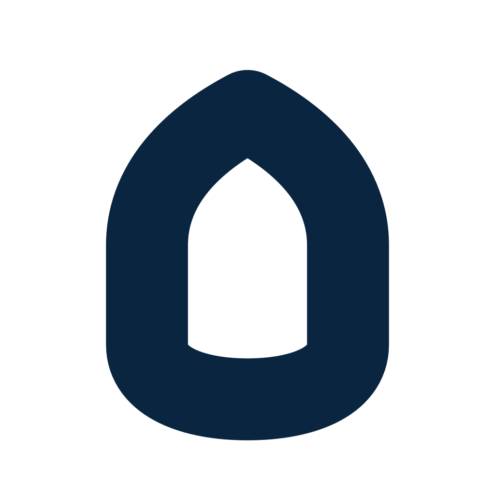
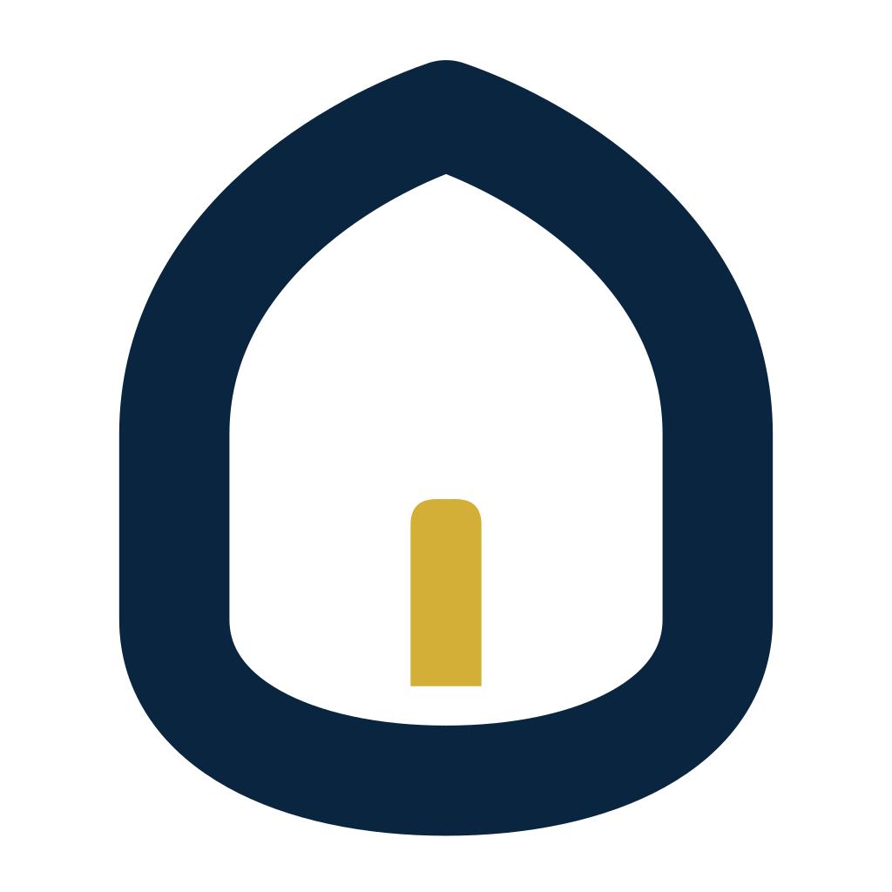

128
الشعار الحقيقي من assets/logo/ بأحجام الاستخدام الفعلية. الملف للقراءة فقط — لا تعديل عليه.
16-light البديل (بلا عمود) — لا إعادة تصميم.
16 مبسّط (بلا عمود)ARCH_SMALL (خط أعرض، بلا عمود).

| الملف | المقاس | الاستخدام |
|---|---|---|
odina.ico | 16→256 | أيقونة الملف التنفيذي والمثبّت |
png/light/ · png/dark/ | 16 24 32 48 64 128 256 512 1024 | سطح المكتب · القوائم · الصينية |
png/mono-black/ · mono-white/ | كاملة | طباعة · مستندات · خلفيات صعبة |
svg/odina-icon-16-light.svg | 16–32 | القوس المبسّط بلا عمود |
press/odina-2048-sand.png | 2048 | صحافة · متاجر · عرض |